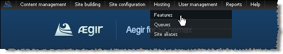
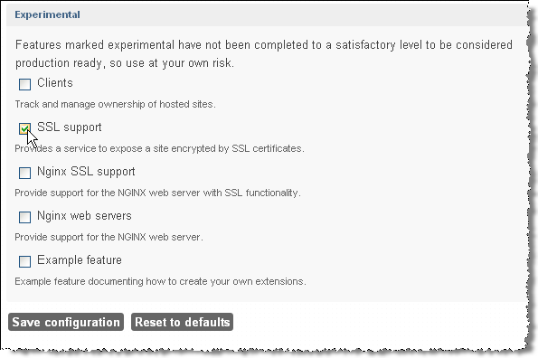
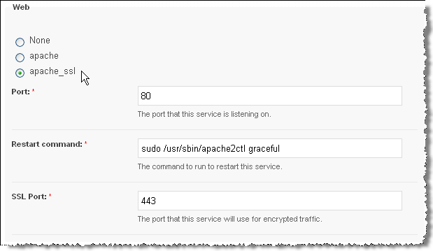
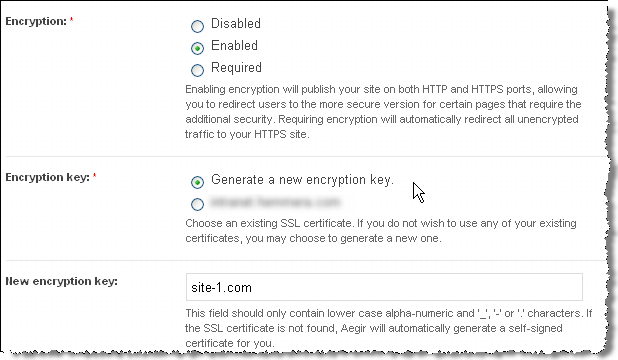

community.aegirproject.org
Using SSL
Introduction
SSL support was significantly improved in Aegir 0.4 alpha9 and subsequent releases have further refined the SSL functionality. Here are the current steps to configure SSL support in Aegir and apply it to your web sites.
Prepare Your Server
- Make sure port 443 is open for SSL traffic.
- From the command line, install SSL software for your web server (e.g. on Debian/Ubuntu you can use
sudo apt-get install openssl). - Enable SSL support (e.g.
sudo a2enmod ssl). You will need to restart Apache at this point.
Enable SSL Support in Aegir
- You have to enable SSL support in Aegir as it is off by default. Assuming the URL of your Aegir front end is aegir.example.com, browse to aegir.example.com/admin/hosting/features 
- Click on Experimental to reveal experimental features 
- Check SSL support
- Click Save configuration
Configure Your Aegir Server
- Click on the Servers tab
- Click on the server that you wish to enable SSL support
- Click Edit to change the server configuration
- Click apache_ssl (this will reveal an additional field: SSL port, which should be already populated with 443). Note: you may also have to add an IP address to the IP addresses field. 
- Click Save - this will start various tasks beginning with a verify task on the server followed by verify tasks on all platforms that are associated with that server
- If all goes well you will see the following changes in your Aegir file system structure: a) under /var/aegir/config you will see a new directory ssl.d b) under /var/aegir/config/server_master you will see a similar new directory ssl.d
Configure Your Aegir Site
- You must enable SSL on your sites that are on those platforms associated with the server. Browse to aegir.example.com/hosting/c/site-1.com
- Click Edit to change the site configuration
- Choose the type of Encryption required and the Encryption key (see the explanatory notes below each option).  NOTE:, Alternatively, you may specify a directory under /var/aegir/config/server_master/ssl.d where your own certificate and key is to be stored (see Apache notes below).
- Click Save. Aegir will then generate a certificate and private key for your web site and insert these into a new VirtualHost directive in your vhost file. (This file is typically at /config/server_master/apache/vhost.d/site-1.com).
- If all goes well the VirtualHost directive will now have these important elements:
<VirtualHost xx.xx.xx.xx:443> # <-- where xx.xx.xx.xx is an IP address dedicated for SSL access to your site and 443 is the port number
....
# Enable SSL handling.
SSLEngine on
SSLCertificateFile /var/aegir/config/server_master/ssl.d/site-1.com/openssl.crt
SSLCertificateKeyFile /var/aegir/config/server_master/ssl.d/site-1.com/openssl.keyNow, when you navigate to https://site-1.com you should see that your site is SSL enabled.
Notes for Apache users with Commercial Certificate File(s)
If you wish to use your own commercial certificate and key you will need to do the following:
- Follow the directions above, using the "Generate new encryption key" option and using your site's domain name for the "New encryption key". This will create a site directory under
/var/aegir/config/ssl.d/site-1.com. With this step, you have created a self-signed certificate, and your site is now configured to use it. - This generated a 2048 bit RSA key for you along with a CSR (Certificate Signing Request). If you prefer to generate your own RSA keys, replace the files in the
/var/aegir/config/ssl.d/site-1.comdirectory with your RSA keys. - Copy and paste the
.csrfile into the form for the issuing Certificate Authority (CA) to create your certificate. - When your certificate has been generated, download the files from the issuing authority and place in your temporary folder on your PC. You may have more than one .crt files, in this case you have a "bundle" or what we call a "certificate chain" that you need to add in aegir (see below).
- Transfer all the files to /var/aegir/config/ssl.d/site-1.com. Rename the site .crt file to openssl.crt. If you have a certificate chain, install it in
openssl_chain.crt. You should have at least three files in the directory (openssl.crt,openssl.key,openssl.csr, and optionnallyopenssl_chain.crt).
IMPORTANT: Do not verify your site until you complete the next step! Whenever you reverify your site, your vhost file is automatically regenerated by Aegir and any non-Aegir generated certificate information will be replaced in the vhost file. Your commercial certificate will not work without referencing the sf_bundle.crt file in your vhost file!
Using a SSL Chained Certificate.
Usually if you buy a commercial SSL certificate, you will also need to add one or more 'chain' certificates, these will be supplied by your vendor along with your certificate. To install the chain too, just copy the chain file to: /var/aegir/config/ssl.d/site-1.com/openssl_chain.crt
Verify your site from aegir's frontend.
You should now be able to access your site via https:// using your commercial certificate.
Notes for Nginx users:
It is recommended to allow Aegir to create a default self-signed certificate and key first, and then replace the contents of both files (not the files itself) with your real key and certificate. Any chained certificates (bundles) should be included in the same file, directly below your own certificate - there is no need for extra files/lines like it is for Apache configuration.
- Login or register to post comments
- Print entire section
- Talk
#1
Documentation on initial SSL setup is pretty good, but what about a renewal? I really dont want to fix anything that doesnt need fixing. Aegir can be unforgiving when missing the small stuff:-) I cant exactly test this out on a staging site. Do I need to generate a new rsa key for a renewal? I'm using a wildcard cert on a single Linode server running CentOS/Apache, that hosts rabout a dozen Atrium sites through Aegir under individual subdomains under a single domain name.
If I need to upload something new, what folders do I put it in? And do I need to manually update all the virtual hosts of my existing Atrium sites, or will this happen automatically??? Here's where I'm at (with deer-n-headlights look).
I paid for the new SSL with godaddy, and downloaded 2 files 1. gd_bundle.crt 2. mydomain.crt
Inside var/aegir/config/ssl.d/godaddy I have the following files:
Certificate: Data: Version: 3 (0x2) Serial Number: 2x:67:z3: Signature Algorithm: sha1WithRSAEncryption Issuer: C=US, ST=Arizona, L=Scottsdale, O=GoDaddy.com, Inc., OU=http://certificates.godaddy.com/repository, CN=Go Daddy Secure Certification Authority/serialNumber=123456 Validity Not Before: Apr 16 22:18:16 2012 GMT Not After : May 3 17:00:47 2013 GMT Subject: O=.example.com, OU=Domain Control Validated, CN=.example.com Subject Public Key Info: Public Key Algorithm: rsaEncryption RSA Public Key: (2048 bit) Modulus (2048 bit): 00:c0:1d:5a:07:98:42:b1:be:de:b7:20:b5:79:d2: ae:3e:99:06:e3:4b:a8:fc:59:18:f1:3a:05:aa:50: 94:1f:64:71:9f:ea:90:eb:06:e9:1d:a0:89:00:a8:
#2
No sweat. Here it is: Upload/overwrite existing gd_bundle.crt into the active ssl folder. Copy/paste the contents of domain.crt into the openssl.crt file. Make sure to put both files in ssl.d and servermaster/ssl.d. Restart apache & enjoy.
#3
I'm quite confused how SSL works now in Aegir2 with IP's being allocated in the front-end. I posted a question about this at the end of move the SSL IP allocation to the frontend, but I'm guessing as this is a closed issue, it might slip below the radar. Any info on this or a pointer in the right direction is much appreciated.
#4
Seems to be a bug (omission?) in Provision that ignores ssl chain files. I found that the vhost file wouldn't get updated with the SSLCertificateChainFile entry even when following the documentation. Perhaps I was doing something incorrectly but if I was, I never found it. In the end I ended up applying a couple patches, reverifying my platform and all was right with the world. I did have to remove some whitespace in between the two diffs in the patch but other than that it applied to provision 6.x-1.9 (bit of patch fuzz but otherwise ok)
See http://nicksantamaria.net/article/getting-ca-chain-certificates-work-usi... and http://nicksantamaria.net/sites/nicksantamaria.net/files/article_attachm... if you have the same problem. :)
#5
If I select 'Encryption: Required', the server will not redirect traffic from the http port to the https port as described
I am using 5080 and 5443, so it redirects http://server:5080 to https://server:5080, which of course does not work.
lynx attempt:
Looking up stage.web:5080
Making HTTP connection to stage.web:5080
Sending HTTP request.
HTTP request sent; waiting for response.
HTTP/1.1 301 Moved Permanently
Data transfer complete
HTTP/1.1 301 Moved Permanently
Using https://stage.web:5080/
Looking up stage.web:5080
Making HTTPS connection to stage.web:5080
Retrying connection without TLS.
Looking up stage.web:5080
Making HTTPS connection to stage.web:5080
Alert!: Unable to make secure connection to remote host.
Accessing https://stage.web:5443 works however
What gives?
#6
Any Update on this?
We would like to utilize SNI since we have a multi-site setup under one drupal core. Is there anyway to override the process where verify replaces the edit *:443 back to xxx.xx.xxxx:443 ?